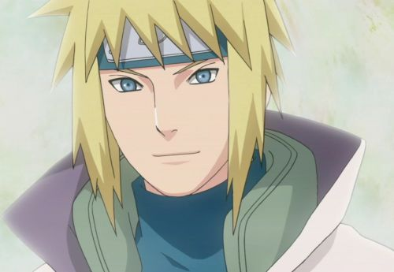
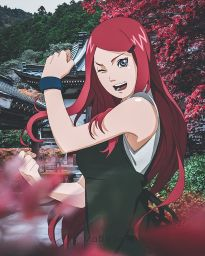

Naruto Uzumaki is the main character of the Naruto series. He dreamed of becoming the Hokage to earn the respect of his village. Through hard work and determination, he eventually became the Seventh Hokage of the Hidden Leaf Village.

Minato Namikaze
Minato
Minato Namikaze is Narutos father and the Fourth Hokage of the Hidden Leaf Village. He was known as the Yellow Flash because of his incredible speed. Minato sacrificed his life to protect the village and seal the Nine-Tails inside Naruto.

Kushina Uzumaki
Kushina
Kushina Uzumaki is Narutos mother and a member of the Uzumaki clan. She was strong, caring, and had a very energetic personality. Kushina loved Naruto deeply and sacrificed herself to help protect him from the Nine-Tails attack.